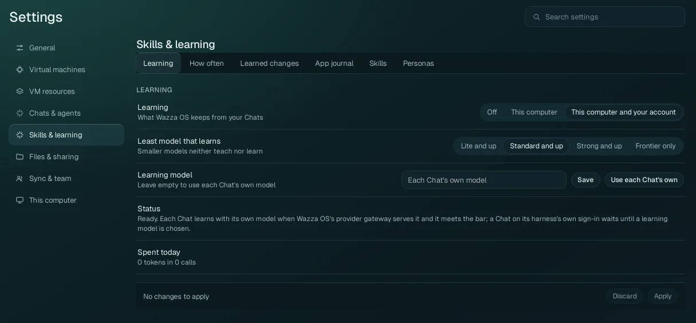
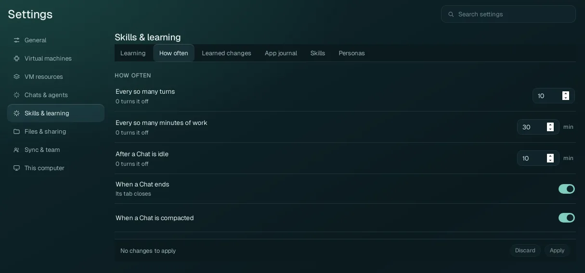
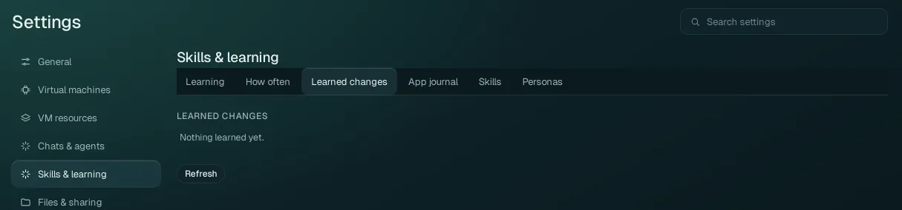
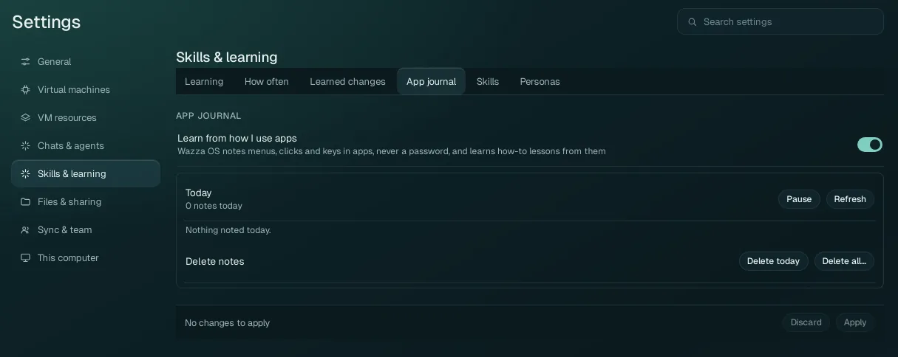
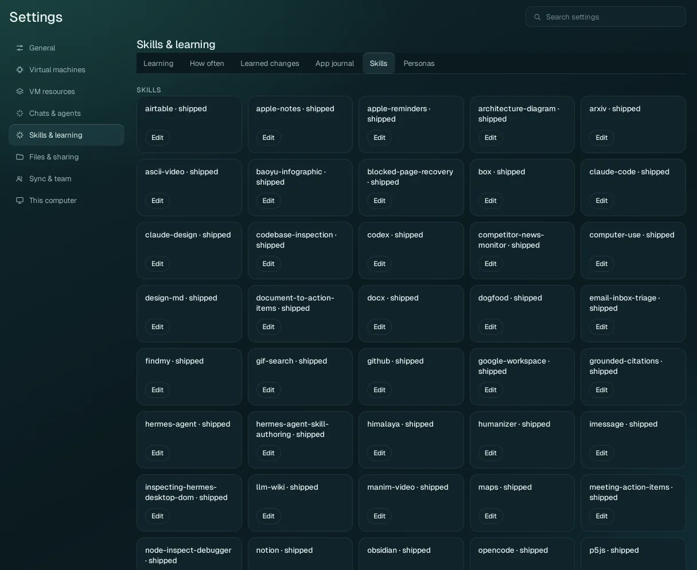
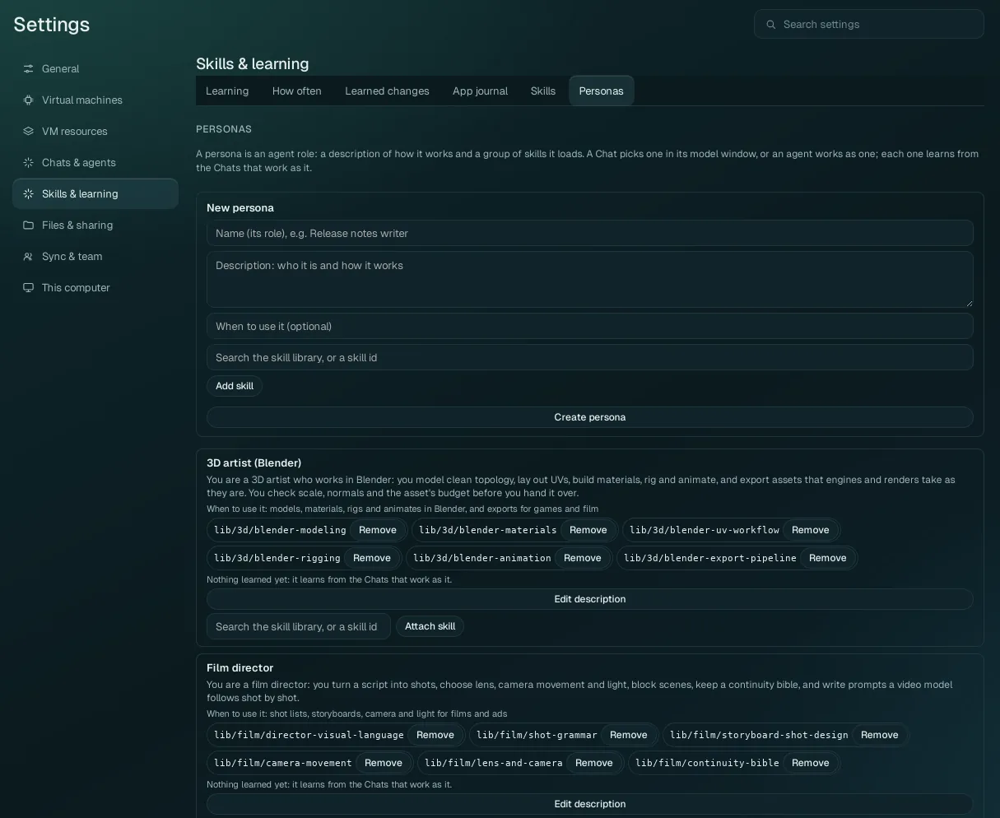

Settings › Skills & learning
Whether Wazza OS learns from your Chats and from how you use apps, how often, with which model, what it learned (with Undo), the skills agents load, and personas.
What skills are and how learning works, with examples: Skills, learning and personas. This page explains each tab and option.
Learning#

| Option | Values | What it does |
|---|---|---|
| Learning | Off This computer This computer and your account (default) |
What Wazza OS keeps from your Chats. Off: nothing is learned. This computer: lessons and new skills are kept on this computer only. This computer and your account: they are also kept with your Wazza OS account (when you are signed in and syncing), so your other computers get them. |
| Least model that learns | Lite and up, Standard and up (default), Strong and up, Frontier only | Smaller models neither teach nor learn: a Chat whose model is below this level is not reviewed with it. Raise it if you see poor lessons; lower it if you only use small models. |
| Learning model | Empty (default: each Chat's own model), or a model id, with Save and Use each Chat's own | The model that reviews Chats. Leave it empty to use each Chat's own model. Set one for Chats whose model is below the bar, or is reached only through its agent's own sign-in (the Status line says when a Chat waits for a learning model). |
| Status | A reading | Whether learning is ready, and why not when it is not. |
| Spent today | A reading | The tokens learning used today, and in how many calls. Learning runs on your models, so it is part of what your provider bills you. |
How often#

When a Chat is reviewed for lessons. Each number set to 0 turns that trigger off. Changes apply at once.
| Option | Default | A review happens… |
|---|---|---|
| Every so many turns | 10 | after that many of the agent's turns in a Chat. |
| Every so many minutes of work | 30 min | after that much time of agent work in a Chat. |
| After a Chat is idle | 10 min | once a Chat has been quiet that long. |
| When a Chat ends | On | when its tab closes. |
| When a Chat is compacted | On | when a long Chat is summed up to save room (see Compact a long Chat). |
One Chat can be left out, or reviewed now, from its own model window: Chat settings › Learning in this chat and Learn from this chat now.
Learned changes#

Everything learned from Chats, newest first. Each change shows its kind (a lesson added to a skill, a new or updated skill, a removed skill, a skill moved), where it applies (an app, with its icon; General; or a project), and its source Chat with Open its Chat. Its details quote the evidence from the Chat, show the exact change (what was added and removed) and the model and tokens it took. Per change:
- Undo: takes the change back (the skill returns to its version before).
- Move to General (or to an app): a learned skill that should apply more widely, or only to one app.
Refresh reads the list again.
App journal#

| Option | What it does |
|---|---|
| Learn from how I use apps (default: on) | Wazza OS notes the menus you open, the buttons you click and the keys you press in the VM's apps (never a password) and learns how-to lessons from them, for the agents that work in those apps. |
| Today | What was noted today, per app, in plain lines (for example "clicked File ▸ Export As… in GIMP"). Pause stops the notes (Resume starts them again); Refresh reads the list again. |
| Delete notes | Delete today deletes today's notes; Delete all… deletes every note (it asks you to confirm). |
The journal is yours alone: no Chat reads it or can pause it.
Skills#

The basic skills every Chat may load, each with its name and where it comes from (shipped: comes with Wazza OS). Edit opens the skill's text: a shipped skill opens as your own copy, which then replaces it on this computer (Wazza OS's own reserved skills cannot be edited). App skills, the know-how of one app, are edited in that app's Edit app (see Edit an app's skill).
Personas#

A persona is an agent role: a description of how it works and a group of skills it loads. A Chat picks one in its model window (Chat settings › Persona), or an agent works as one; each persona learns from the Chats that work as it.
| Control | What it does |
|---|---|
| New persona | Name (its role, for example "Release notes writer"), Description (who it is and how it works), When to use it (optional), skills (search the skill library or type a skill id, then Add skill), then Create persona. |
| Each persona | Its description, when to use it, its skills (each with Remove), what it learned, Edit description, and Attach skill (search, then attach). |
Editing a persona changes only its description, its use line or its skills; what it learned is kept (as its next version, which Undo in Learned changes can take back).